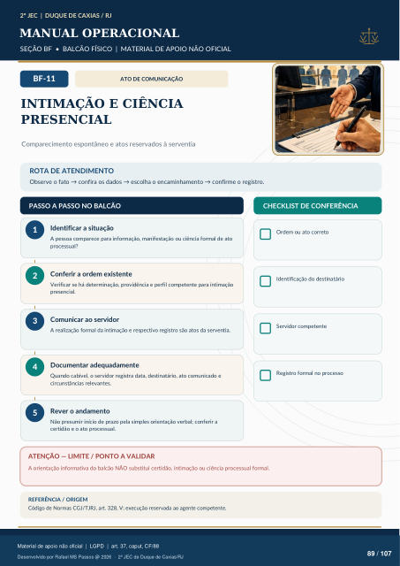

ATO DE COMUNICAÇÃO
INTIMAÇÃO E CIÊNCIA
PRESENCIAL
Comparecimento espontâneo e atos reservados à serventia
ROTA DE ATENDIMENTO
Observe o fato → confira os dados → escolha o encaminhamento → confirme o registro.
PASSO A PASSO NO BALCÃO
CHECKLIST DE CONFERÊNCIA
Identificar a situação
A pessoa comparece para informação, manifestação ou ciência formal de ato processual?
Conferir a ordem existente
Verificar se há determinação, providência e perfil competente para intimação presencial.
Comunicar ao servidor
A realização formal da intimação e respectivo registro são atos da serventia.
Documentar adequadamente
Quando cabível, o servidor registra data, destinatário, ato comunicado e circunstâncias relevantes.
Rever o andamento
Não presumir início de prazo pela simples orientação verbal; conferir a certidão e o ato processual. Ordem ou ato correto Identificação do destinatário Servidor competente Registro formal no processo
ATENÇÃO — LIMITE / PONTO A VALIDAR
A orientação informativa do balcão NÃO substitui certidão, intimação ou ciência processual formal.
REFERÊNCIA / ORIGEM
Código de Normas CGJ/TJRJ, art. 328, V; execução reservada ao agente competente.
Ver também o infográfico original (página 89)
